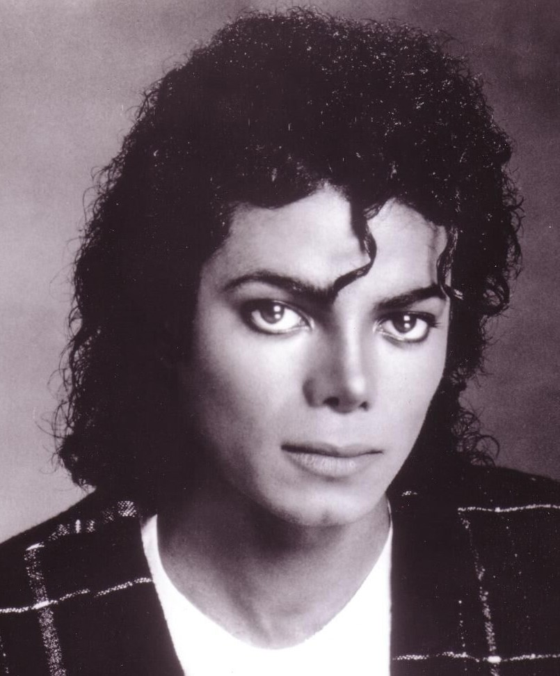

Michael Jackson
Michael Jackson foi um dos artistas mais influentes da música, conhecido por sua voz única, coreografias revolucionárias e videoclipes inesquecíveis. Com hits como "Billie Jean" e "Thriller", ele não apenas definiu o pop, mas também deixou um legado que continua a ressoar até hoje.